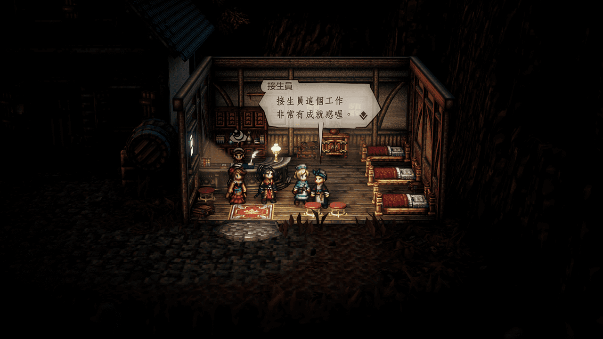
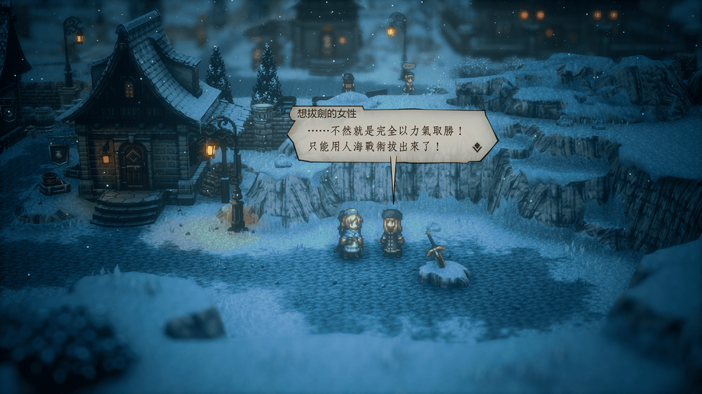
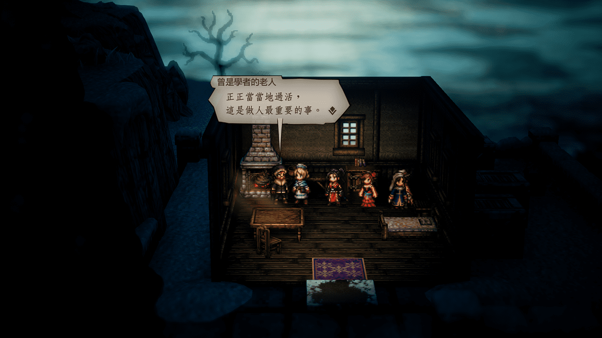
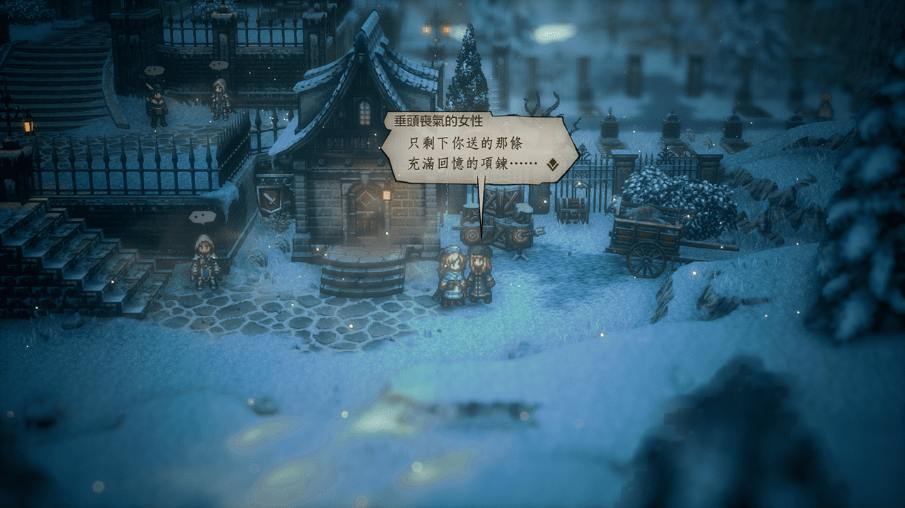

溫特蘭多地區 Winterlands
NPC
戈德克普/學者逃出後村子
慌張的村民
Solution
前往
弗雷姆恰奇/神官初始城
館宿內找到
接生員
邀請入隊

Reward
3000元
增強HP堅果
NPC
東哥德克普雪道
雪道的行商人
Solution
往上過橋後往右走可看到划船處
之後順著河流進入
流氓大本營
大本營上方 盡頭擊退流氓開啟寶箱獲得
風之服
物防+33、屬防+36、減少風屬傷害
大本營下方 盡頭寶箱
異端者的大劍
物攻+69 命中-40 闇屬性威力增加 PS:魔攻無命中問題
Reward
6000元
行商人的羽毛帽 物防14、屬防20、防止睡眠
NPC
溫特布魯
想拔劍的女性
Solution 1
去外爾蘭地區
瓦茲樂修/商人初始城
的武器店裡面找
退休的礦工
買/取
堅固的十字鎬
Solution 2
人海戰術的話就是讓舞孃、神官、商人、獵人都招來NPC

Reward
7000元
生鏽的劍
完全恢復的果醬
NPC
溫特布魯
為兒子著想的父親
去左邊鄰鎮
戈德克普/學者逃出後村子
找曾救過學者的
曾是學者的老人
買/取
銀製羽毛筆

Reward
300元
增加屬攻的堅果(大)
恢復HP/SP的果醬
NPC
史東海爾
道具店的女兒
Solution
如果對著道具店的女兒 探/聽 就會發現資訊寫著『(反白處理)母親已過逝，和父親相依為命…』
看著吱吱唔唔的女兒然後望向櫃台....「(反白處理) 打爆她！！」
Reward
12000元
增加命中堅果(特大)
增加迴避堅果(特大)
NPC
史東海爾
垂頭喪氣的女性
Solution 1
推薦
去東大陸最右下的
梅利之丘
找正在旅宿前把妹的
由吉斯
讓他 入隊 再帶回去見她即可上演修羅場完成任務
Solution 2
直接 取走 她身上的
項鍊

Reward
14000元
引誘緞帶 增加遇敵率
NPC
分離之海-燈塔看守人之島
燈塔看守人之妻
Solution
順著提示去位於西大陸最左側的
廷貝倫
找
露比
(看來寫信的人，想必就是學者初章時幫助他逃跑的人)
Reward
6600元
翠玉短刀 物攻+101、迴避+31、減少對象物攻
NPC
完成藥師終章
溫特布魯
領主 梅里亞
Solution
順著提示前往城鎮北邊的
溫特布魯-盜賊街
酒吧
買/取
盜賊 普菈克
身上
雪兔的信
取得信件後回去找
領主 梅里亞
後觸發劇情通關
Reward
9000元
梅里亞的護身符 行動後恢復HP/SP
Comment
記得 買/取 兩項強力裝備
梅里亞
身上的
幸福胸針
戰鬥後增加EXP/JP獲得量+
藥草園內
園丁 普菈克
身上的
歷戰短劍